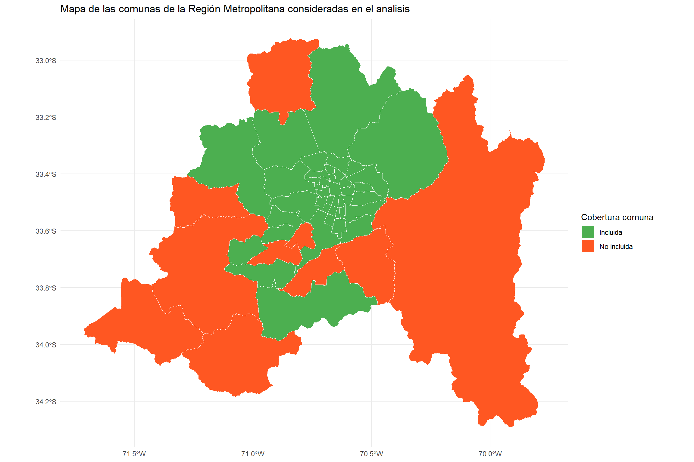
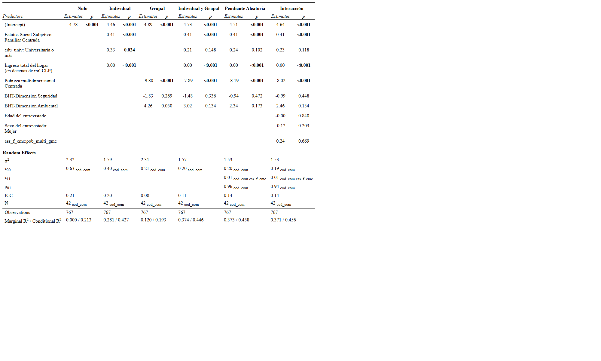

Análisis multinivel del estatus social subjetivo: el caso de la Región Metropolitana
Victoria Arias y Cristóbal Mejías
Análisis de datos multinivel - 2025
Departamento de Sociología, Universidad de Chile
Santiago, 19 de Junio de 2025
Introducción
Problema de investigación: La autopercepción del estatus social no se configura únicamente por características individuales, sino también por el entorno en el que se vive. Considerando que los contextos urbanos actuales están marcados por la desigualdad, la Región Metropolitana —caracterizada por su heterogeneidad comunal y altos niveles de desigualdad socioespacial— constituye un escenario pertinente para analizar cómo inciden los factores individuales y comunales en el posicionamiento social subjetivo, a partir del estudio de 42 comunas.
Factores asociados nivel 1: Nivel educacional, ingresos total del hogar y estatus social subjetivo familiar
Factores asociados nivel 2: Índice de pobreza multidimensional y dimensión ambiental y de seguridad (MBT) en las comunas de la Región Metropolitana
¿Qué factores individuales y comunales inciden en la autopercepción del estatus social subjetivo en la Región Metropolitana?
Hipótesis
Nivel 1
\(H_1\): A mayor nivel educativo, mayor será el estatus social subjetivo
\(H_2\): A mayores ingresos, mayor es el estatus social subjetivo
\(H_3\): Un mayor estatus social subjetivo familiar tiene un efecto positivo sobre el estatus social subjetivo
Nivel 2
\(H_4\): Las comunas con un mayor índice de pobreza multidimensional niveles más bajo de estatus social subjetivo
\(H_5\): Las comunas con una mayor tasa en la dimensión ambiental tienen niveles más elevados de estatus social subjetivo.
\(H_6\):Las comunas con una mayor tasa en la dimensión de seguridad tienen niveles mas altos de estatus social subjetivo
Interacción
\(H_7\): El efecto positivo del estatus social familiar sobre la autopercepción del estatus social subjetivo se reduce en aquellas comunas con un mayor índice de pobreza multidimensional
Metodología
Datos
La presente investigación utiliza datos provenientes de la encuesta Estudio Longitudinal Social de Chile (ELSOC) del año 2022. Para las variables de nivel 2, se incorporaron dos fuentes adicionales: la primera entrega información comunal sobre el índice de pobreza multidimensional, y la segunda aporta datos sobre las dimensiones ambiental y de seguridad incluidas en la Matriz de Bienestar Territorial.
Análisis mediante modelo multinivel de dos niveles:
Nivel 1: Individuos (n=767)
Nivel 2: Comunas (n=42)
Variables
| Tabla 1: Variables del estudio | ||
|---|---|---|
| Nivel de análisis | Variable | Operacionalización |
| Dependiente | Estatus social subjetivo | ¿Dónde se ubicaría usted en la escala de estatus social? 1 (Nivel más bajo) – 10 (Nivel más alto) |
| Nivel 1 | Nivel educacional | Educación básica incompleta Educación básica completa Educación media incompleta Educación media completa Educación superior no universitaria Educación universitaria completa |
| Ingreso total por hogar | ||
| Estatus social familiar | ¿Dónde ubicaría a la familia en que creció en la escala de estatus social? 1 (Nivel más bajo) – 10 (Nivel más alto) | |
| Nivel 2 | Pobreza multidimensional | Índice compuesto por las siguientes dimensiones: educación, salud, trabajo, vivienda y redes y cohesion social |
| Ambiental | Dimensión basada en la amplitud térmica anual y la cobertura vegetal | |
| Seguridad | Dimensión construida a partir de los indicadores de seguridad que miden la incidencia de delitos graves y leves contra personas y la propiedad | |
Descriptivos de nivel 1
| var | label | n | NA.prc | mean | sd | range | |
|---|---|---|---|---|---|---|---|
| 3 | ess | Estatus Social Subjetivo Individual | 767 | 0 | 4.69 | 1.65 | 10 (0-10) |
| 4 | ess_f | Estatus Social Subjetivo Familiar | 767 | 0 | 4.26 | 2.04 | 10 (0-10) |
| 5 | ess_f_cmc | Estatus Social Subjetivo Familiar Centrada | 767 | 0 | 0.00 | 1.89 | 11.36 (-4.8-6.56) |
| 1 | edu | edu | 767 | 0 | 5.48 | 2.27 | 9 (1-10) |
| 2 | edu_univ | edu_univ | 767 | 0 | 1.16 | 0.36 | 1 (1-2) |
| 6 | inghogar_i | Ingreso total del hogar (imputada) | 767 | 0 | 955748.98 | 1345617.58 | 18000000 (0-18000000) |
| 7 | inghogar_i_mil | Ingreso total del hogar (en decenas de mil CLP) | 767 | 0 | 95.57 | 134.56 | 1800 (0-1800) |
Descriptivos Nivel 2
| var | label | n | NA.prc | mean | sd | range | |
|---|---|---|---|---|---|---|---|
| 3 | pob_multi_gmc | Pobreza multidimensional Centrada | 42 | 0 | 0.00 | 0.06 | 0.26 (-0.15-0.11) |
| 1 | dim_amb | BHT-Dimension Ambiental | 42 | 0 | 0.32 | 0.08 | 0.28 (0.25-0.53) |
| 2 | dim_seg | BHT-Dimension Seguridad | 42 | 0 | 0.81 | 0.10 | 0.45 (0.53-0.98) |
Métodos
Modelo nulo: modelo sin predictores
\[ ess_{ij} = \gamma_{00} + u_{0j} + r_{ij} \]
Modelo 1 (individual)
\[ ess_{ij} = \gamma_{00} + \gamma_{10} \text{educación universitaria} + \gamma_{10} \text{estatus social familiar} + \gamma_{10} \text{ingresos} + u_{0j} + r_{ij} \]
Modelo 2 (Grupal)
\[ ess_{ij} = \gamma_{00} + \gamma_{01} \text{pobreza mutidimensional} + \gamma_{01} \text{dimension ambiental} + \gamma_{01} \text{dimension seeguridad} + u_{0j} + r_{ij} \]
Modelo 3 (Multinivel)
\[ \begin{align*} ess_{ij} &= \gamma_{00} + \gamma_{10} \text{educación universitaria}_{ij} + \gamma_{10} \text{estatus social familiar}_{ij} + \gamma_{10} \text{ingresos}_{ij} \\ &+ \gamma_{01} \text{pobreza multidimensional}_{j} + \gamma_{01} \text{dimensión ambiental}_{j} + \gamma_{01} \text{dimensión seguridad}_{j} + u_{0j} + r_{ij} \end{align*} \]
Modelo con pendiente aleatoria
\[ \begin{align*} ess_{ij} &= \gamma_{00} \\ &+ \gamma_{10} \text{estatus social familiar}_{ij} + \gamma_{10} \text{educación universitaria}_{ij} \\ &+ \gamma_{10} \text{ingreso}_{ij} + \gamma_{01} \text{pobreza multidimensional}_{j} \\ &+ \gamma_{01} \text{dimensión seguridad}_{j} + \gamma_{01} \text{dimensión ambiental}_{j} \\ &+ u_{0j} + u_{1j} \text{estatus social familiar}_{ij} + r_{ij} \end{align*} \]
Modelo de interacción entre niveles
\[ \begin{align*} ess_{ij} &= \gamma_{00} \\ &+ \gamma_{10} \, \text{estatus social familiar}_{ij} + \gamma_{10} \, \text{educación universitaria}_{ij} \\ &+ \gamma_{10} \, \text{ingreso}_{ij} + \gamma_{01} \, \text{pobreza multidimensional}_{j} \\ &+ \gamma_{01} \, \text{dimensión seguridad}_{j} + \gamma_{01} \, \text{dimensión ambiental}_{j} \\ &+ \gamma_{11} \, \text{estatus social familiar}_{ij} \, \text{pobreza multidimensional}_{j} + u_{0j} \\ &+ u_{1j} \, \text{estatus social familiar}_{ij} + r_{ij} \end{align*} \]
Resultados
Descriptivos
Modelos
Tabla de resumen de los modelos

Resultados
resultado del modelo aleatorio

Interacción

La interacción muestra que…
Conclusiones
- bla bla bla
- bla bla
- bla